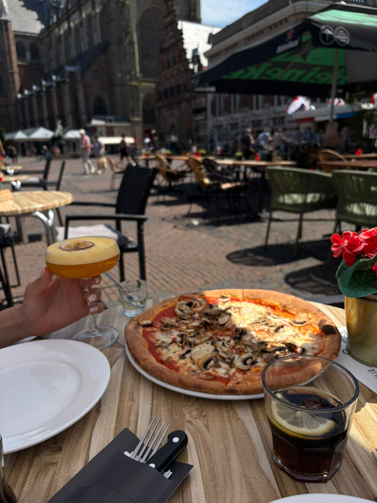
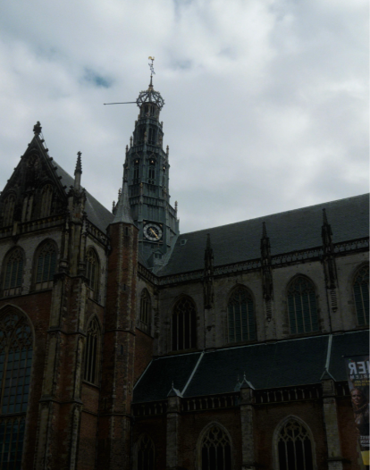

Grote Markt
De wandeling begint op de Grote Markt, een van de bekendste plekken in het centrum van Haarlem. Hier vind je verschillende historische gebouwen en krijg je meteen een goed beeld van de sfeer van de oude binnenstad.
Deze wandelroute is bedoeld voor mensen die tijdens het wandelen meer van de geschiedenis en bekende plekken van Haarlem willen ontdekken. De route loopt door de binnenstad en langs het Spaarne, met drie duidelijke stops onderweg.

De wandeling begint op de Grote Markt, een van de bekendste plekken in het centrum van Haarlem. Hier vind je verschillende historische gebouwen en krijg je meteen een goed beeld van de sfeer van de oude binnenstad.

Vanaf de Grote Markt kun je verder wandelen langs de Grote of Sint-Bavokerk. De kerk is een herkenbaar gebouw in het centrum en vormt een belangrijk onderdeel van het historische stadsbeeld van Haarlem.

Daarna loop je richting het Spaarne en kom je uit bij het Teylers Museum. Het museum ligt direct aan het water en past goed bij deze route omdat je hier geschiedenis, cultuur en de omgeving van het Spaarne met elkaar combineert.